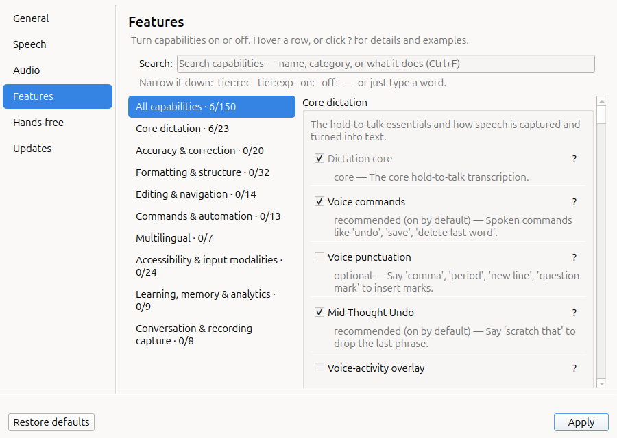

Linux
The most tested platform
Free, open-source, offline voice typing for Linux, macOS and Windows.
Install YazSes Try Hosted Demo View Source on GitHub
The hosted demo runs on Hugging Face servers, so audio you send to it leaves your computer. See Privacy.

Hold your hotkey: Right Alt on Linux, Right Option on macOS, Right Ctrl on Windows. You can change it with yazses hotkey set.
By default, audio is recorded only while you hold the key. Speech is recognised on your CPU with faster-whisper.
The text is typed into the focused app. Commands such as "undo that" or "go to line 42" run as editor or terminal actions instead.
Each feature below is either on from the start or waiting for you to turn it on. Experimental and planned features are not listed.
yazses transcribe turns audio or video into text. Enable with yazses features enable recimport.yazses meeting start and stop. Speaker labels need the diarization extra.Every switch is listed with yazses features. Each optional feature is turned on with yazses features enable <name>, then applied with yazses restart.
There are two ways to use speech recognition from YazSes. They have different privacy properties, so keep them apart.
| Option | Where speech is processed | Does audio leave your computer? |
|---|---|---|
| YazSes installed on your computer | Your own CPU, with faster-whisper. The speech model is downloaded once, on first use. | No. By default, no audio, transcripts, editor context or usage data leave the machine. Dictation works without a network connection after the model is downloaded. |
| Hosted demo on Hugging Face | Hugging Face infrastructure. | Yes. Audio you submit to the demo is processed on Hugging Face servers. |
The hosted demo lets you judge accuracy before you install. For private, offline voice typing, install YazSes on your own computer. The full statement, with every network connection listed and its trigger, is on the privacy statement page.
Choose your operating system. Each guide gives the commands and the first-run steps.
The most tested platform
Preview, Apple silicon
Preview
Linux has the most reports from real machines. The macOS and Windows builds are newer, and the validation matrix lists exactly what has been confirmed on real hardware. Not ready to install? You can try it without installing, or read what installing actually costs first.
YazSes: An Offline, Privacy-First, Cross-Platform Hold-to-Talk Voice-Dictation System, by Mohsen Seyedkazemi Ardebili.
arXiv:2607.28878. https://arxiv.org/abs/2607.28878
With the default base.en model, the paper reports a word error rate of 4.07 % on a 200-utterance LibriSpeech test-clean subset, with a median decode of 1.56 s on a laptop CPU. Dictation on your own microphone will differ.
YazSes is open source. You do not need a speech or AI background to help.